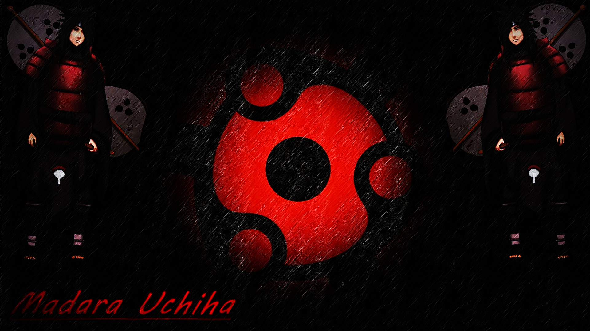
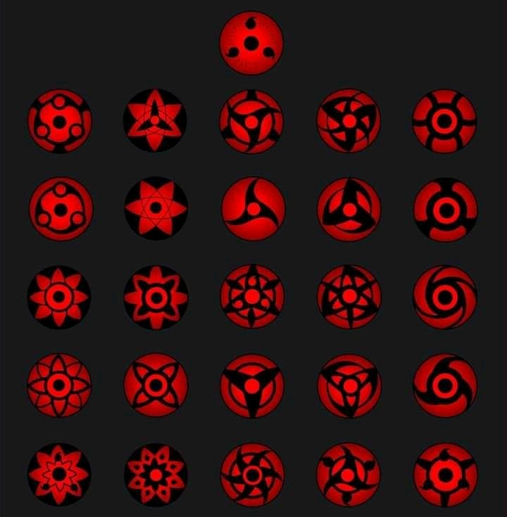

The anime Naruto is a very intersting, wonderful and life changing anime that
helps children as grow to understand much about life and how to tackle any diffculties
that life throws at them no matter what it is.
This anime Naruto was made in Japan by the Japaness. It is a trending
cartoon that teaches how to live peacefully, how to survive in a world without peace, how to behave
and the rest not only to the children but the aadults to.
Naruto being a trending cartoon does not mean that it is popular only in Japan. It means that it
is a popular cartoon in Japan and other countries as well to put it short it is popular worldwide(everywhere)
It is rated the best anime in Japan and even the most watched anime worldwide.
Naruto is not just a single anime. It is in episode by episode. From when he was small to when he grew
up. If the beginning of when he was small to the end starts from episode 1 to episode 120 WHILE when
he is already in his teenage stage starts from episode 1 to episode 500.
Now to start the story of this epic Naruto Anime and also note that unlike other countries, this
anime does not call the leaders president. Their leaders are known as KAGES.
In this anime, there are 5 villages which are:
The village hidden in the land of the leaves
The village hidden in the land of the cloud
The village hidden in the land of the stone
The village hidden in the land of the waters
The village hidden in the land of the sand
All this villages have their own head like
The leader of the hidden leaf is known as the Hokage. The hokages are always the strongest
kages among the 5 kages.
The village hidden in the cloud is headed by a Raikage.There are the second strongest kages
after the Hokages.
The village hidden in the stone is headed by the Tusukage
The village hidden in the sand is headed by the Kazekage.
The village hidden in the waters is headed by the Misukage
All this villages has always being at war with each other and the most funny thing is that the reason why
they fight each other is either because one village might have a land more fertile then the other so they fight
so they can conquer or take over the other village.
Now to the main story.
In Konoha Village, on a peacefully night, A woman named Uzumaki Krushina who married the fourth Hokage
Namekaze Minato(the fastest shinobi in the whole village). Uzumaki Kurshina had a beast sealed inside of her the
beast is known as the Nine Tailed Beast(Kyuubi) and anyone who has a tailed best in their body are
known as Jinjurikin.
In the whole village, there are approximately a total of
Nine tailed beast(from one tail to nine tailed beast). there was a man who planned on attacking Konoha that
night he is also a member of the village but he dispiced the villlage so much. He is from one of the strongest
clan in the whole 5 villages(The Uchiha clan). His name is Uchiha Madara. One of the most feared man
in the whole village.

The Uchiha Clan are known because of their unique eye which is known as the Sharingan.
The Sharingan is the best and highest when it comes to avoiding your opponents attack, projecting
illusions(genjustu) for your opponents, it also helps you to copy your opponents justu and many more.
And note that there are different types of sharingan like:
The Double Tomoe Sharingan
The Tripe Tomoe Sharingan
The Mangekyo Sharingan
The Eternal Mangekyo Sharingan and the rest

The tailed beast seal which is used to seal any tailed beast inside anyone weakens during child birth so
as she gave birth the seal was completely broken so Madara saw it as the best time to attack so he attacked
both Krushina, Minato and the child which was just given birth to. Minato being the fastest shinobi immediately
rushed to save the child so as Madara has succeded in distracting minato he immediately adpoted Krushina so he
can ripe out the tail beast by force and as a jinjurinkin if you have your tailed beast ripped out of you, you
will die. So Madara finally succeded in ripping out the tailed from Kurshina but Uzumaki's and only Uzumaki's
can live for about 30minutes or maybe more before they die. So when Minato came back for his wife the tailed beast
has alreadybeing rippedout of her body Minato just carried her and kept her where he kept their child. Next
he dressed in his hokage cloth and went out to look for madara while Madara with the help of his Sharingan
he was able to put the nine tailed beast in genjustu so as to be able to control it.
Minato on seeing Madara notice how Madara was using the nine tails to cause harvoke in the village and then
forgot about madara to start thinking on how to stop the nine tail and he did not even notice that Madara was at
his back. Madara uses a time and space ninjustu which helps him to suck anything into his own dimension.
Minato was almost sucked into Madara's dimension but being the fastest shinobi he was very much faster than
Madara's time and space ninjustu and was able to run away to the prefect place to fight him. Madara followed him
and then the fight started Minato tryed using his kunai (knife) to sabi him but Madara's ninjustu also helps him
to take any part of his body that wants to be hurt by anybody into his own dimension so that the weapon or
anything will just pass through his body but he can own maintain it for 5 seconds.
Minato now understood his
techniques and found out a way to defeat him. Being so fast Minato aimed for the 5 seconds interval and was
able to defeat him with the justu he made himself. He calls it Rasengan.
After that he was able to break the genjustu placed on the nine tails by Madara so he can face of with it
knowing that no one is controling it. After Minato was able to defeat Madara he went on to stop the nine tails
from rampaging and destorying the village. As the fight began, Krushina came with the baby to and also with her
last strength to support her husband. together they were able to hold the nine tails although not completely
so nine tails with the only un-held part tried to kill the baby with its finger nail but Minato and Krushina
noticed it on time and then jumped in to save their son but their ended up losing their own life but before
died, Minato alread performed a life sacrificing sealing justu to seal the nine tails into him and his son.
In order to seal a tailed into two persons body you will have to divide it. So Minato knowing
that the nine tails as a whole will be to difficult for naruto to control divided the nail
tails into two which are YIN and YANG. He died with the Yin and put the Yang into his son's body and
before the both of them died they gave their son a name and the name was Naruto.
Fifteen years after the death of Naruto's parents, no one ever acknoledged him instead they took him
as a monster. Why, because he has the nine tails fox inside him and that it might take over him and destroy the
village again.
Some of the the people that showed Naruto love and gave him a reason to live were Ramen guy, Iruka Sensi and
the Third Hokage Sarutobi Huriezun and even got him into
the ninja academy not minding what the people are saying because he knows how Naruto's parents fought for
their village not minding if it cause them their life. Although, not that Sarutobi adopted Naruto as his son
but he helped to groom and build him into a fine, handsome, number 1 prankstar. Whenever he pranks people he
he just laughs and runs away.
Naruto is a type of boy that loves being happy. He loves smiling no matter the consequence, no matter
what his going through he is always smiling.
When it comes to intelligence, well Naruto is not quite strong they. But when it comes to hardwork,
he is also ready to go and never stop. He pushes himself hard just to get people to acknoledged him. to cut
it short, Naruto is a genius in hardwork.
About the ninja academy, Naruto repeated three times but he noticed that during the quite only one justu
is requested and that the Shadow Clone justu Naruto sucked at this justu that he repeated the academy
three times but on the fourth time he passed and not just passed he shocked the teacher.
The shadow clone justu is a technique that helps you bring out a clone of yourself but by doing so
you will be reducing your chakara (energy) level by half. But Naruto did not just bring out a clone of himself, he brought
out more than a thousand clone of himself just by traning and luckingly for him his teacher saw him and then
he was able to pass the fourth time.
In the ninja world, they have their own ranks or levels like
Genin
Chunnin
Jounin
Anbu
Hokage
So when Naruto and his classmates graduated from the academy, they were assigned to different groups with
either a Chunnin or Jounin as the team captain or leader. So Naruto along with a girl named Sakura and a boy
boy named Sasuke where assigned to Team 7 with their leader being a Jounin who is feared and popularly known
as CopyNinja Hatake Kakashi.
A short story about Hatake Kakashi.
Hatake Kakashi is one of the smartest most intelligent people in the village. His taking after his Sensi
the fourth Hokage Namekaze Minato. He might not be as fast as Lord Fourth or even be as smart as him but he is
still a wonderful ninja. Lord fourth trained both Kakashi, a boy named Obito and a girl named Ren.
Hatake Kakashi is a boy who graduated from the academy at the age of 8, became a Genin at the age of 8
Chunnin at the age 10 became a Jounin 16 at the age of 19 and joined the anbu at the age of 12.
He is not just strong physically but emotional too. He watched his dead dads corpes but and he could not
do anything but cry and after that he became so serious with the ninja's rules and regulations and that caused
he one of his Team mates life Uchiha Obito from the Uchiha Clan. Orbito has always being jealous of kakashi
and also looked up on him but when Kakashis dedcided that he will only follow the ninja's rule to abandon your
friends just to finish a mission Obito became very angry with him told he to go complete the mission that as
for him, he is going to save their team mate Ren then he left to save her after he reached during the fight due
to his emotions he was able to unlock his Sharingan that was when Kakashi then dedcided to come back. As he came
back the both of them now went into a near by cave to rescue their team mates, the cave was blown up from the
outside causing a serious earthquake in the cave. Rocks started falling from every part of the cave and then, one
almost fell ontop of Kakashi but Obito jumped in pushed him out of the falling zone and then
took the hit from the rock which seriously damaged half of his body.
Everyone gave Kakashi gifts on becoming a chunnin apart from Obito but after the rock damaged half of his
body that was when he realized the perfect gift for Kakashi and that was his left eye. So he asked Ren to remove it
and put in Kakashi's eye before he died and that is why some people call he either Sharingan Kakashi or
CopyNinja Hatake Kakashi because with the Sharingan he is able to copy any of his opponents justu.
Also he was the one who killed his other team mate but it was not intensional. The villages were trying
to use her body as a vessel for the three tailed beast but she rejected it. Then the villages decided to capture
her and do it by force not minding her opinion again but she ran both she ran away with Kakashi so the villagers
then sent pursuers after them to kill Kakashi and bring back Ren alive. Before the fight, Ren begged Kakashi to
please kill her but Kakashi seriously refused with Rens idea and then went to fight off the pursuers. So as
fought them they kept on increasing so he decided to use the justu he formed himself. He calls it Chidori
but in the process of wanting to use it on the first person, Ren entered and took the hit just to die.
Kakashi not knowing what to do just ran away while crying about what happended. He even had nightmares about
it and anytime he wakes up, he always washes his hands and keeps on saying "It won't wash off". And after losing
everyone in his life he still did not become bad unlike others instead he lived on for all his friends wishes.
Back to the main story. Kakashi sensi trained both Naruto, Sasuke and Sakura and they also take missions
together as a team. Kakashi never ever let anything hurt is pupils no matter what there are up against. Same goes
for the pupils, The will never let anything hurt their sensi no matter what their meet. There have a very good
and strong Master Pupil Relationship.
Kakashi is one of the people who really cared for Naruto because Naruto is the son of his Role Model
Namekaze Minato the fourth Hokage. He trained all of them into a fine, good and handsome shinobies in the village

 In the whole village, there are approximately a total of
Nine tailed beast(from one tail to nine tailed beast). there was a man who planned on attacking Konoha that
night he is also a member of the village but he dispiced the villlage so much. He is from one of the strongest
clan in the whole 5 villages(The Uchiha clan). His name is Uchiha Madara. One of the most feared man
in the whole village.
In the whole village, there are approximately a total of
Nine tailed beast(from one tail to nine tailed beast). there was a man who planned on attacking Konoha that
night he is also a member of the village but he dispiced the villlage so much. He is from one of the strongest
clan in the whole 5 villages(The Uchiha clan). His name is Uchiha Madara. One of the most feared man
in the whole village.